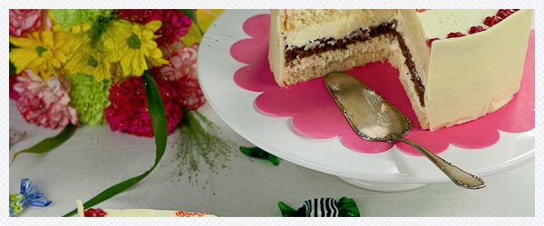

Tort z białą czekoladą
Składniki na jasny biszkopt:
- 4 jajka (osobno żółtka i białka)
- pół szklanki drobnego cukru + 1 cukier wanilinowy
- pół szklanki mąki pszennej +2 łyżki
- 3 łyżki mąki ziemniaczanej
Składniki na ciemny biszkopt:
- 3 jajka (osobno żółtka i białka)
- pół szklanki* cukru
- pół szklanki mąki pszennej – 2 łyżki
- 2 łyżki kakao
- 2 łyżki mąki ziemniaczanej
Składniki na masę:
- 3 serki mascarpone (po 250g każdy)
- 250ml mocno schłodzonej śmietanki kremówki
- 300g białej czekolady (jak ktoś nie lubi bardzo słodkich tortów, proponuję dać dwie tabliczki)

Przepis na jasny biszkopt:
Dno tortownicy o średnicy 22cm wyłożyć papierem do pieczenia, boków niczym nie smarować.
Białka ubić na sztywną pianę ze szczyptą soli, pod koniec ubijania dodawać partiami cukier, następnie dodawać po jednym żółtku, cały czas ubijając. Mąki przesiać i dodać do ubitej masy jajecznej. Bardzo delikatnie wymieszać. Ja to robię na najniższych obrotach miksera. Gotową masę przelać do przygotowanej tortownicy, wyrównać wierzch.
Piec w piekarniku nagrzanym do 175°C przez około 35 minut lub do tzw. suchego patyczka. Po tym czasie wyjąć i zostawić do całkowitego wystygnięcia. Przekroić na trzy blaty (będą potrzebne tylko dwa).
Przepis na ciemny biszkopt:
Dno tortownicy o średnicy 22cm wyłożyć papierem do pieczenia, boków niczym nie smarować.
Białka ubić na sztywną pianę ze szczyptą soli, pod koniec ubijania dodawać partiami cukier, następnie dodawać po jednym żółtku, cały czas ubijając. Mąki i kakao przesiać i dodać do ubitej masy jajecznej. Bardzo delikatnie wymieszać. Ja to robię na najniższych obrotach miksera. Gotową masę przelać do przygotowanej tortownicy, wyrównać wierzch.
Piec w piekarniku nagrzanym do 175°C przez około 35 minut lub do tzw. suchego patyczka. Po tym czasie wyjąć i zostawić do całkowitego wystygnięcia. Przekroić na dwa blaty (będzie potrzebny tylko jeden).
Biszkopty najlepiej jest upiec dzień wcześniej.
Przepis na masę:
Czekoladę połamać na małe kawałki i rozpuścić w kąpieli wodnej (miskę z czekoladą umieszczamy nad garnkiem z wrzącą wodą, miska nie może dotykać wody). Odstawić do wystygnięcia.
Serek mascarpone i kremówkę zmiksować razem, pod koniec ubijania dodać roztopioną czekoladę i zmiksować na puszystą masę.
Jasny blat ułożyć na paterze, wyłożyć część masy i wyrównać, przykryć ciemnym blatem, wyłożyć kolejną część masy, wyrównać, przykryć jasnym biszkoptem, wierzch i boki tortu również wysmarować masą. Można na tym etapie zakończyć i udekorować tort wedle uznania, ale możecie też zrobić taką opaskę z białej czekolady jak jest na tym torcie. Nie jest to trudne.
Opaska z białej czekolady:
Rozpuścić w kąpieli wodnej dwie i pół tabliczki białej czekolady (250g). Zmierzyć obwód tortu i jego wysokość. Na papierze do pieczenia wyrysować pasek, odpowiadający tym wymiarom (u mnie było to 65cm x 8cm). Rozsmarować ciepłą czekoladę na przygotowanym pasku, odstawić do tężenia. Gdy czekolada zastygnie, ale będzie jeszcze miękka, owinąć tort dookoła (czekoladą do tortu, papierem na zewnątrz). Papieru nie ściągać! Wstawić do lodówki aż czekolada stwardnieje, dopiero wtedy zdjąć delikatnie papier. I gotowe. Przystroić wedle własnego uznania.